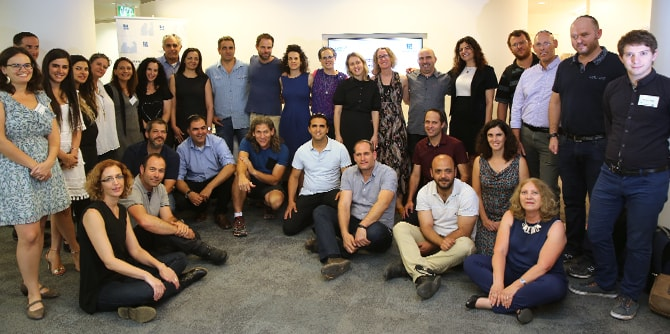

On June 26, 2018, the Mandel Graduate Unit hosted a celebratory event for the graduates of Cohort 25 of the Mandel School for Educational Leadership, who recently completed their studies. The staff of the Graduate Unit presented the Unit’s activities and introduced the new graduates to graduates of previous cohorts, who presented their perspectives on their experiences with the benefit of hindsight.
“Building a Partnership” is the first event of the Graduate Unit's continuing support program for Mandel graduates, which is organized by cohort in a group format. The event that was held for Cohort 25 included introductory sessions in small groups, in which the new graduates spoke about the experience of returning to the field after two years of study, shared their expectations of the Mandel community and the Graduate Unit in their professional lives, and discussed the main professional challenges they face at present.
The staff of the Mandel Graduate Unit presented the Unit’s activities and the partnership model that it offers graduates. This was followed by a workshop led by Dr. Granit Almog-Bareket, the director of the Mandel Graduate Unit, and Dr. Odette Sela. Entitled “Stakeholder Management Partnerships,” the workshop examined mapping techniques and the management of relationships with various stakeholders upon beginning a new job.
The event was also attended by graduates from previous cohorts, in order to enable the new graduates to learn from the experiences of other graduates and to hear their perspectives with the benefit of hindsight.

{kind=link}